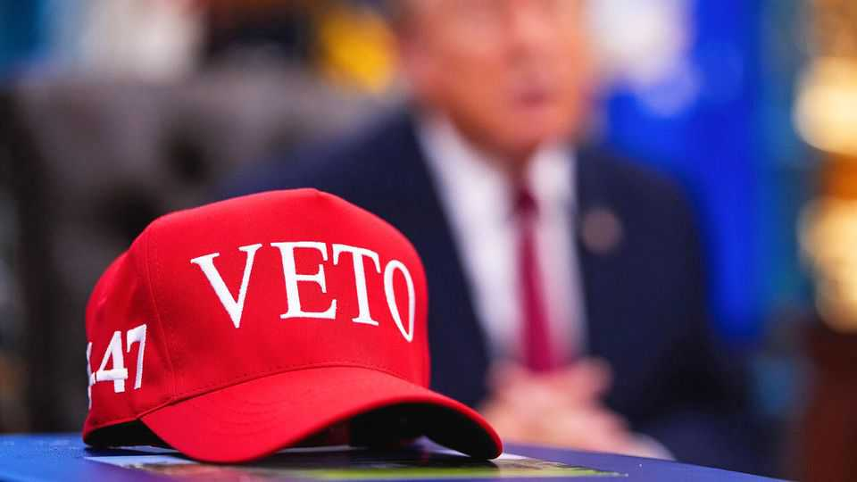

The future of Trumponomics: compromise or failure
How the art of the deal may yet prevail over the art of denial

Nov 12th 2026
DONALD TRUMP has a knack for fitting his politics into four letters. His supporters relish wearing red baseball caps emblazoned with MAGA. After his party got thumped in the midterm elections, he posted a picture on social media of the familiar cap bearing a new slogan: VETO.
A sign of things to come? Perhaps. With Democrats set to control both chambers of Congress starting in January, gridlock may seem inevitable. Yet Mr Trump would not be himself if he did not also expect to make deals. “After a couple of months of vetoes, they’ll call,” he predicted of Democrats. “And we’ll work together.”
Such bipartisan bargaining would certainly be a departure from the first two years of the president’s second term. With Republicans controlling the House of Representatives and the Senate, Mr Trump passed a sweeping tax-and-spending law that disproportionately benefited the rich and swelled projected deficits. Much else, from his massive tariffs to mass deportations, was enacted through presidential powers that he continues to hold. What, then, will Trumponomics look like in its remaining years?
On fiscal policy, two looming deadlines may provide opportunities for negotiation. The first concerns government funding. It expires on December 11th, a month before members of Congress are sworn in, but a temporary extension could leave the next budget deal to the new Democrat-controlled legislature. The second deadline, to raise the debt ceiling, could provide even greater leverage for Democrats later next year, when failure to reach an agreement would risk a default. Mr Trump struck deals with Democrats on both issues in his first term, at times siding with them against Republican congressional leaders.
Any fiscal bargain could prove expensive. Mr Trump wants much more money for the armed forces. His budget for 2027 proposed a rise of roughly 40% in defence spending, although the full request is highly unlikely to be met. Democrats, meanwhile, want to restore tax breaks for health care that expired at the end of 2025 and otherwise ease financial burdens on households. Hakeem Jeffries, their leader in the House, has prioritised expanding the child tax credit and earned-income tax credit, a top-up for low earners.
In the old guns-versus-butter debate, America’s usual answer is to “spend more on both”, observes Rohit Kumar, who served Mitch McConnell, a Republican former Senate majority leader, as deputy chief of staff and is now at PwC, a consultancy. For every additional dollar the Pentagon receives, he reckons, Democrats could demand a matching increase for domestic programmes.
All of this would add to the deficit. Allianz Research, an arm of an insurance company, expects a fiscal loosening of about 0.2% of GDP in 2027. Additional demands could include delays to planned cuts in Medicaid (health care for the poor) and food stamps. How much red ink this adds will depend partly on offsetting budget tweaks elsewhere. Democrats could try to restrict tax breaks for data-centre investment or impose a new levy on the AI industry, suggests Mr Kumar.
Compromise may also shape Mr Trump’s ambitions for America’s artificial-intelligence boom. In the past two years Mr Trump has championed data centres, taking a “let it rip” approach to regulation. But Democrats prevailed in races for the governorship in Georgia, Ohio, Texas and elsewhere promising pauses or other limits on new construction. Incoming governors who back such measures won in states that account for 41% of planned data-centre capacity, according to Cleanview, a research firm. It would be wrong, though, to conclude that these governors want permanent bans on data centres. Most merely want their operators to pay more for electricity, notes Gabe Horwitz of Third Way, a centre-left think-tank.
That could open the door to another bargain for Mr Trump, in a perennially promising area of reform: permitting. A bipartisan bill backed by the president would speed up construction of power plants and transmission lines, while requiring large data centres to shoulder more of the costs they impose on the grid. Its chances of passing before January have dimmed, with some Democrats now hoping to extract further concessions after their electoral victories. But it is still possible to imagine a deal that makes it easier to build while shielding households from higher electricity prices.
Even where Mr Trump can act without Congress, he may face new constraints. After a big setback at the Supreme Court, what remains of his chaotic tariff campaign faces more legal challenges. Democrats are preparing congressional investigations and legislation to curb his trade powers further. These efforts may achieve little without enough Republican support to override a presidential veto. Yet a bigger constraint could be public opinion: nearly two-thirds of midterm voters said his tariffs had hurt the economy. That might encourage Mr Trump to ease some duties, says Ryan Majerus, a former American trade official now at King & Spalding, a law firm. He could find an off-ramp in a pending court ruling on “Section 301” tariffs, which are supposed to punish countries for unfair trade.
Mr Trump’s room for manoeuvre may narrow in other ways, too. In the past he has repeatedly pressed the Federal Reserve to lower interest rates. Now a Democratic Senate could block his attempts to install another loyalist on its board, strengthening the central bank’s independence. Public pressure may also encourage Mr Trump to soften his immigration crackdown. In a post-election interview with CBS, a television network, the president acknowledged that his deportation policy “might be too tough” and said that he would “love to do something on immigration” with Democrats, particularly for long-term undocumented workers.
Mr Trump’s willingness to compromise is, of course, far from certain. Only hours after his CBS interview he appointed Stephen Miller, an architect of the “tough” deportation campaign, as White House chief of staff. The appointment of a hardliner may have been meant to put paid to the popular notion that “Trump always chickens out” in the end.
Still, with Democrats controlling Congress, bargaining may offer the best route to advancing Mr Trump’s remaining economic agenda. When it comes to confrontation with triumphant Democrats, TACO may prevail over VETO. ■